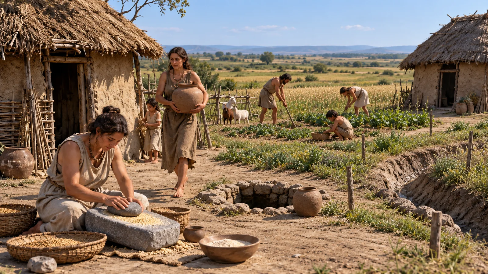

Un atlante da esplorare. Un mondo da comprendere.
DAUNIA
nel tempo
Uomo, ambiente e territorio
Come si viveva qui? Entra nei luoghi, osserva i gesti, scopri le tracce.
11 fasi · 13 luoghi · dal Paleolitico alla tarda antichità
Le immagini fanno vedere.
I testi spiegano gesti, ambienti e relazioni.
Le tracce permettono di capire.
Fotografie reali e fonti accompagnano ogni percorso.
Una domanda guida l’esplorazione.
Perché vivere qui, e come cambia il territorio?
Attraversa il tempo
Le caselle sono fasi di lettura, non intervalli di uguale durata. Contatti e romanizzazione si sovrappongono; le date sono convenzioni regionali, non confini netti.
Atlante delle evidenze
Luoghi nel tempo
Costa e Ofanto moderni, generalizzati. Nessuna paleocosta o strada antica inventata.
Apri una scheda anche con la tastiera.
La Daunia antica non coincide con la provincia moderna. Salapia romana (Monte Salpi, Trinitapoli) estende il percorso nell’attuale provincia BAT. I punti sono riferimenti didattici: non indicano ingressi o percorsi di visita.
Tracce → analisi → interpretazione
Come sappiamo queste cose?
Un oggetto isolato non racconta da solo un paesaggio. Conta dove si trova, insieme a quali tracce, come è datato e quali alternative possono spiegare i dati.
Tre livelli da tenere distinti
Documentato: una struttura, un reperto, un risultato analitico. Interpretazione: la spiegazione che collega le evidenze. Limite: ciò che il campione non permette di concludere. La mancanza di una prova non dimostra automaticamente l’assenza di persone.
I saperi irrinunciabili
- Ambiente e società si trasformano insieme, con ritmi diversi.
- Frequentazione, abitazione e uso funerario sono attività differenti.
- Il Neolitico cambia la gestione di risorse e spazi; non inaugura una scala di valore fra culture.
- Lagune e coste mutano per processi naturali e azioni umane: occorre distinguerli.
- Una ceramica può segnalare contatti; non prova da sola migrazione o conquista.
- La romanizzazione trasforma reti e istituzioni attraverso conflitti, accordi e scelte locali.
- La tarda antichità comprende prosperità, riorganizzazione e discontinuità, secondo i luoghi.
Parole per leggere il territorio
- Antropizzazione
- Trasformazione dell’ambiente dovuta alle attività umane, diversa per intensità e forma.
- Stratigrafia
- Relazioni fra depositi, tagli e strutture: una successione da interpretare, non un semplice mucchio di strati.
- cal BP
- Anni calibrati prima del 1950, convenzione delle datazioni scientifiche. Non sono anni prima di oggi.
- Paleoambiente
- Ambiente del passato ricostruito mediante indicatori e modelli datati.
- Ricognizione
- Ricerca sistematica delle tracce sul terreno; visibilità e campionamento condizionano il risultato.
Metti alla prova il ragionamento
Quale conclusione regge?
Ricerca trasparente
Fonti e metodo
La selezione privilegia studi scientifici, musei, Ministero della Cultura e cataloghi regionali. Le schede collegano le singole evidenze alle fonti; cronologie e interpretazioni restano aggiornabili.
Limiti di questa carta
Non è un censimento completo. La costa è moderna e generalizzata (Natural Earth, pubblico dominio). Non sono tracciati confini etnici né collegamenti geografici ipotetici. Le coordinate derivano da cataloghi e repertori: le schede ne indicano origine e precisione. Salapia vetus resta nell’elenco, senza punto, finché la georeferenziazione non sarà verificata.
Le fotografie documentarie mostrano scavi, reperti e paesaggi attuali. Le 13 «fotografie possibili» sono invece ricostruzioni ipotetiche generate con IA: illustrano ambienti e attività sulla base delle fonti, con persone, abiti e disposizioni immaginati. Sono sempre etichettate e datate; non costituiscono prove archeologiche né ricostruzioni scientifiche validate.
Bibliografia ragionata
Fotografie, provenienza e diritti
Apri una fotografia per leggere ciò che mostra, i limiti del suo uso, l’autore e la licenza. Le copie locali sono disponibili anche offline; le pagine originali richiedono una connessione.
Fotografie possibili: entrare nella vita del passato
Una scena per ogni luogo, con la propria datazione. Aprila per conoscere fonti, scelte illustrative e limiti. I testi distinguono ciò che sappiamo da ciò che serve a immaginare un ambiente abitato.
Installazione, uso offline e aggiornamenti
Dopo il primo caricamento completo, i contenuti, le fotografie e la mappa sono disponibili offline. Attendi la conferma in fondo alla pagina. Su iPad: Safari → Condividi → Aggiungi alla schermata Home. Su browser compatibili usa «Installa».
Non vengono salvate risposte o ricerche personali. L’atlante non usa pubblicità, analisi degli accessi o servizi cartografici remoti. Un aggiornamento viene preparato interamente prima di sostituire la copia offline: chiudi le altre schede e riapri l’app.
Ricerca e verifica delle fonti: 1 ottobre 2026. Documentazione del progetto · Crediti completi
Caricamento dei dati dell’atlante…